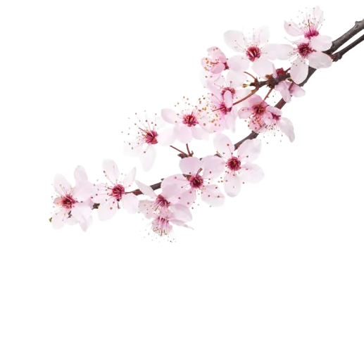

Plant Grimoire
Cherry
Cherry (Prunus avium) is a deciduous tree with white or pink blossoms and bright red fruits.
Magickal Properties
- Gender: Feminine
- Planet: Venus
- Element: Water
- Powers: Love, Divination
Folk Names
Sweet Cherry
Magickal Uses
For creativity: Work with wild cherry in creative workings and artistic endeavors.
For health: Use cherry wood, bark, or fruit in healing and health workings.
Sabbath fires: Wild cherry is one of the nine sacred woods traditionally included in Sabbath fires.
For love: Cherry juice is used as a substitute for blood in old recipes, and the bark, when worn or carried, stimulates love.
For divination: To find the direction from which your future love will appear, go outdoors on a windy day and shake the branch of a cherry tree, then note the direction the wind blows the loosened blossoms.
For expectations: Cherry is associated with hopeful expectations and anticipation of good things to come.
Aphrodisiac Properties
The cherry is sensuously red and juicy, and inside the stone lies the potential for new life. These qualities make the cherry a potent aphrodisiac symbol.
Magickal Teas
Wild cherry bark can be brewed as a magickal tea to spark creativity, aid divination, and draw love. Drink 1 to 2 cups only during the spell event itself.
The Sakura of Japan
The cherry is bound up with Japan, where the drifts of pink blossom scattering across the pavements are the very sign of spring. This is the sakura, the ornamental cherry, thought to have come first from China, and the advance of its flowering is followed so closely that the whole nation marks it. As one of the earliest trees to bloom it stands for hope and new beginnings, the herald of the rice harvest to come. Yet it flowers swiftly and its petals are soon gone, so that the cherry also speaks of the fleeting beauty of life, and of the warriors who fall in battle. For the Samurai, crushing the cherry in the hand to reach the hard stone within stood for the sacrifice of mortal flesh and blood to lay bare the inner stone, the soul, which is why cherries adorn the scabbard of the Samurai's sword as a token of that search for inner meaning.
Hidden Fruit and the Cherry-Stone Charm
In the West the cherry is the hidden fruit, an image that survives in the common phrase for the loss of virginity. It is also a symbol of fertility, worked into charms to draw a lover. A girl would bore a hole in a cherry stone on each of the fourteen nights of the waxing Moon, threading the stones onto a string, and on the night of the full Moon she would wear the finished necklace about the top of her thigh in hopes of drawing the one she desired.
Meaning When Gifted
When cherry blossom is gifted its meaning depends on its form.
- Single Cherry Blossom: Education
- Double Cherry Blossom: False hopes